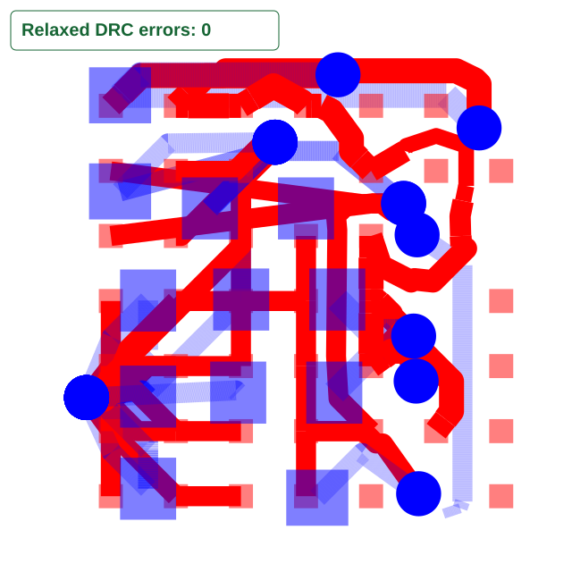
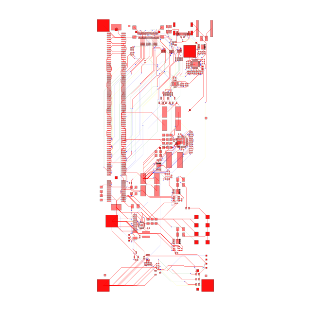

Native routed cutout and complete dataset18 board
The passing repro uses 54 actual iCE/Pi pads and 45 power/ground terminals. The indexed fix leaves its copper unchanged. Dataset18 sample 12 likewise keeps identical copper while its cramped-port stage falls from 3.34 to 0.62 seconds in the first comparison.
Before — iCE/Pi

After — iCE/Pi

Before — dataset18 sample 12

After — dataset18 sample 12

All 16 dataset18 samples solve with zero relaxed-DRC errors, 3,407 via entries total, and byte-identical native PCB SVGs. The first comparison has flat average elapsed time (36.643 → 36.644 seconds), so it supports a stage-speed improvement rather than an overall speedup.
Paired complete dataset18 on one Blacksmith runner
| Metric | Before | After |
|---|---|---|
| P50 | 27.648s | 27.245s |
| P95 | 90.360s | 89.207s |
| Mean | 36.714s | 35.951s |
Both variants solve 16/16 with zero relaxed-DRC errors and 3,407 via entries. This is one paired measurement; the stage reduction is consistent across all six full boards and all sixteen dataset18 cases.
iCE/Pi fanout diagnostic repeat
The initial indexed fanout run hit the hard timeout without an SVG. In the instrumented repeat, both variants fail at the same U22 boundary capacity (1/32 escapes), emit identical PCB SVGs, and never construct the modified reachability solver. The initial missing result remains recorded below.
Base repeat · 7/230 complete nets

Fixed repeat · 7/230 complete nets

Measured repeat evidence
{
"run": "https://github.com/tscircuit/tscircuit-autorouter/actions/runs/43935944589",
"initialIndexedResult": "660-second hard timeout before progress, assessment or PCB SVG",
"variants": {
"base": {
"progressStatus": "failed",
"errors": [
"Fanout failed for U22: only 1 of 32 connections could escape to the breakout boundary. The breakout boundary is 0.7mm from the pads at its narrowest point, which all 32 escapes have to share. Give the fanout more room by increasing the breakout's padding, or by extending the breakout to include the parts crowding it (decoupling capacitors, series resistors) so their pads sit inside the boundary instead of against it.",
"Error: Fanout failed for U22: only 1 of 32 connections could escape to the breakout boundary. The breakout boundary is 0.7mm from the pads at its narrowest point, which all 32 escapes have to share. Give the fanout more room by increasing the breakout's padding, or by extending the breakout to include the parts crowding it (decoupling capacitors, series resistors) so their pads sit inside the boundary instead of against it.",
"Fanout failed for U22: only 1 of 32 connections could escape to the breakout boundary. The breakout boundary is 0.7mm from the pads at its narrowest point, which all 32 escapes have to share. Give the fanout more room by increasing the breakout's padding, or by extending the breakout to include the parts crowding it (decoupling capacitors, series resistors) so their pads sit inside the boundary instead of against it."
],
"wallMs": 515384.23045800003,
"timedOut": false,
"initialCopperElements": 0,
"connectedNets": 7,
"requestedNets": 230,
"traces": 0,
"vias": 0,
"pours": 70,
"geometryErrors": [],
"membershipErrors": [],
"reachabilityPruningConstructedCount": 0,
"milestones": [
"FANOUT_RECHECK_ADD_BEGIN",
"FANOUT_RECHECK_RENDER_BEGIN",
"FANOUT_RECHECK_RENDER_PROMISE_RETURNED",
"FANOUT_RECHECK_FIRST_STEP"
],
"svg": "icepi-fanout-repeat-base.pcb.svg",
"svgSha256": "ab880d195b2e3aa0e24be0b34ab907382daa99f94b38381d3ef181d0f65aa2d6"
},
"fixed": {
"progressStatus": "failed",
"errors": [
"Fanout failed for U22: only 1 of 32 connections could escape to the breakout boundary. The breakout boundary is 0.7mm from the pads at its narrowest point, which all 32 escapes have to share. Give the fanout more room by increasing the breakout's padding, or by extending the breakout to include the parts crowding it (decoupling capacitors, series resistors) so their pads sit inside the boundary instead of against it.",
"Error: Fanout failed for U22: only 1 of 32 connections could escape to the breakout boundary. The breakout boundary is 0.7mm from the pads at its narrowest point, which all 32 escapes have to share. Give the fanout more room by increasing the breakout's padding, or by extending the breakout to include the parts crowding it (decoupling capacitors, series resistors) so their pads sit inside the boundary instead of against it.",
"Fanout failed for U22: only 1 of 32 connections could escape to the breakout boundary. The breakout boundary is 0.7mm from the pads at its narrowest point, which all 32 escapes have to share. Give the fanout more room by increasing the breakout's padding, or by extending the breakout to include the parts crowding it (decoupling capacitors, series resistors) so their pads sit inside the boundary instead of against it."
],
"wallMs": 534801.750182,
"timedOut": false,
"initialCopperElements": 0,
"connectedNets": 7,
"requestedNets": 230,
"traces": 0,
"vias": 0,
"pours": 70,
"geometryErrors": [],
"membershipErrors": [],
"reachabilityPruningConstructedCount": 0,
"milestones": [
"FANOUT_RECHECK_ADD_BEGIN",
"FANOUT_RECHECK_RENDER_BEGIN",
"FANOUT_RECHECK_RENDER_PROMISE_RETURNED",
"FANOUT_RECHECK_FIRST_STEP"
],
"svg": "icepi-fanout-repeat-fixed.pcb.svg",
"svgSha256": "ab880d195b2e3aa0e24be0b34ab907382daa99f94b38381d3ef181d0f65aa2d6"
}
}
}Paired timing validation
{
"run": "https://github.com/tscircuit/tscircuit-autorouter/actions/runs/43934397200",
"summary": {
"base": {
"solverName": "AutoroutingPipelineSolver9_PreloadedTraceGraph",
"completedRateLabel": "100.0%",
"relaxedDrcRateLabel": "100.0%",
"timedOutLabel": "0/16",
"p50TimeMs": 27648.361270499998,
"p60TimeMs": 35713.196582000004,
"p70TimeMs": 45840.131297500004,
"p80TimeMs": 58687.688899,
"p90TimeMs": 84099.658317,
"p95TimeMs": 90360.4869045,
"p50PeakRssBytes": 1048969216,
"p80PeakRssBytes": 1994649600,
"p90PeakRssBytes": 2174332928,
"avgVia": 212.9375,
"avgTraceLintIssues": {
"odd_angle": 375.4375
},
"meanTimeMs": 36714.220700875,
"totalVias": 3407,
"totalCrampedTimeMs": 12876.403593
},
"fixed": {
"solverName": "AutoroutingPipelineSolver9_PreloadedTraceGraph",
"completedRateLabel": "100.0%",
"relaxedDrcRateLabel": "100.0%",
"timedOutLabel": "0/16",
"p50TimeMs": 27244.7462015,
"p60TimeMs": 34618.281615,
"p70TimeMs": 43191.685558,
"p80TimeMs": 59035.025683,
"p90TimeMs": 82886.3105555,
"p95TimeMs": 89206.5126715,
"p50PeakRssBytes": 1055676416,
"p80PeakRssBytes": 1904214016,
"p90PeakRssBytes": 2080194560,
"avgVia": 212.9375,
"avgTraceLintIssues": {
"odd_angle": 375.4375
},
"meanTimeMs": 35951.081292375,
"totalVias": 3407,
"totalCrampedTimeMs": 4120.295607999999
}
},
"samples": [
{
"sample": 1,
"beforeMs": 10096.195220000001,
"afterMs": 10066.895837,
"beforeVias": 157,
"afterVias": 157,
"beforeDrcErrors": 0,
"afterDrcErrors": 0,
"beforeCrampedMs": 327.5786260000001,
"afterCrampedMs": 100.38374999999996
},
{
"sample": 2,
"beforeMs": 78733.18146400001,
"afterMs": 77771.766058,
"beforeVias": 507,
"afterVias": 507,
"beforeDrcErrors": 0,
"afterDrcErrors": 0,
"beforeCrampedMs": 580.800317,
"afterCrampedMs": 143.70543399999997
},
{
"sample": 3,
"beforeMs": 9271.611658,
"afterMs": 9272.069698000001,
"beforeVias": 82,
"afterVias": 82,
"beforeDrcErrors": 0,
"afterDrcErrors": 0,
"beforeCrampedMs": 339.24899600000003,
"afterCrampedMs": 259.62956600000007
},
{
"sample": 4,
"beforeMs": 30197.431735000002,
"afterMs": 29827.895603,
"beforeVias": 137,
"afterVias": 137,
"beforeDrcErrors": 0,
"afterDrcErrors": 0,
"beforeCrampedMs": 247.80210599999998,
"afterCrampedMs": 185.685838
},
{
"sample": 5,
"beforeMs": 7836.993533,
"afterMs": 7729.233645,
"beforeVias": 142,
"afterVias": 142,
"beforeDrcErrors": 0,
"afterDrcErrors": 0,
"beforeCrampedMs": 159.16245000000004,
"afterCrampedMs": 87.886301
},
{
"sample": 6,
"beforeMs": 58687.688899,
"afterMs": 59035.025683,
"beforeVias": 265,
"afterVias": 265,
"beforeDrcErrors": 0,
"afterDrcErrors": 0,
"beforeCrampedMs": 938.3865779999996,
"afterCrampedMs": 470.867761
},
{
"sample": 7,
"beforeMs": 13429.651643000001,
"afterMs": 13276.544765,
"beforeVias": 200,
"afterVias": 200,
"beforeDrcErrors": 0,
"afterDrcErrors": 0,
"beforeCrampedMs": 783.836977,
"afterCrampedMs": 195.36993500000005
},
{
"sample": 8,
"beforeMs": 38919.770933,
"afterMs": 37066.745836,
"beforeVias": 281,
"afterVias": 281,
"beforeDrcErrors": 0,
"afterDrcErrors": 0,
"beforeCrampedMs": 1343.143979,
"afterCrampedMs": 437.39082800000006
},
{
"sample": 9,
"beforeMs": 15188.387818000001,
"afterMs": 14576.005991,
"beforeVias": 114,
"afterVias": 114,
"beforeDrcErrors": 0,
"afterDrcErrors": 0,
"beforeCrampedMs": 725.117753,
"afterCrampedMs": 222.79746899999986
},
{
"sample": 10,
"beforeMs": 14132.944003,
"afterMs": 13396.227566,
"beforeVias": 158,
"afterVias": 158,
"beforeDrcErrors": 0,
"afterDrcErrors": 0,
"beforeCrampedMs": 777.8750719999998,
"afterCrampedMs": 341.4535249999999
},
{
"sample": 11,
"beforeMs": 14851.017979999999,
"afterMs": 13778.045721,
"beforeVias": 187,
"afterVias": 187,
"beforeDrcErrors": 0,
"afterDrcErrors": 0,
"beforeCrampedMs": 620.8831319999999,
"afterCrampedMs": 146.487482
},
{
"sample": 12,
"beforeMs": 52760.491662,
"afterMs": 49316.62528,
"beforeVias": 298,
"afterVias": 298,
"beforeDrcErrors": 0,
"afterDrcErrors": 0,
"beforeCrampedMs": 3538.283401,
"afterCrampedMs": 632.3522699999999
},
{
"sample": 13,
"beforeMs": 35713.196582000004,
"afterMs": 34618.281615,
"beforeVias": 194,
"afterVias": 194,
"beforeDrcErrors": 0,
"afterDrcErrors": 0,
"beforeCrampedMs": 333.01213000000007,
"afterCrampedMs": 123.25627000000009
},
{
"sample": 14,
"beforeMs": 93043.542108,
"afterMs": 92823.485527,
"beforeVias": 267,
"afterVias": 267,
"beforeDrcErrors": 0,
"afterDrcErrors": 0,
"beforeCrampedMs": 306.9889720000001,
"afterCrampedMs": 101.16346300000009
},
{
"sample": 15,
"beforeMs": 89466.13517,
"afterMs": 88000.85505299999,
"beforeVias": 313,
"afterVias": 313,
"beforeDrcErrors": 0,
"afterDrcErrors": 0,
"beforeCrampedMs": 1370.0308560000003,
"afterCrampedMs": 536.5413199999998
},
{
"sample": 16,
"beforeMs": 25099.290805999997,
"afterMs": 24661.5968,
"beforeVias": 105,
"afterVias": 105,
"beforeDrcErrors": 0,
"afterDrcErrors": 0,
"beforeCrampedMs": 484.2522479999998,
"afterCrampedMs": 135.32439599999998
}
]
}